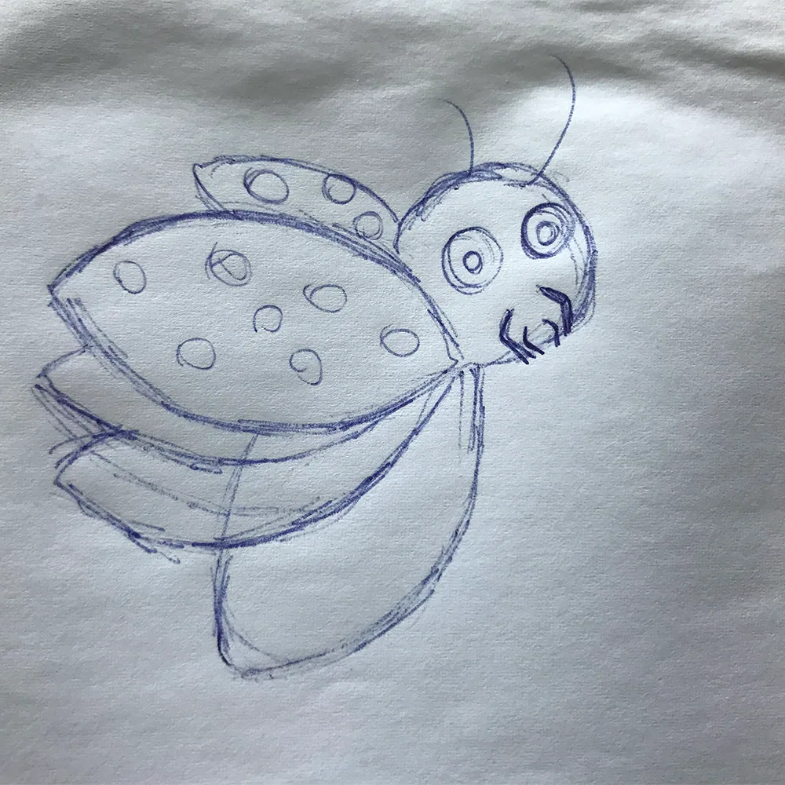
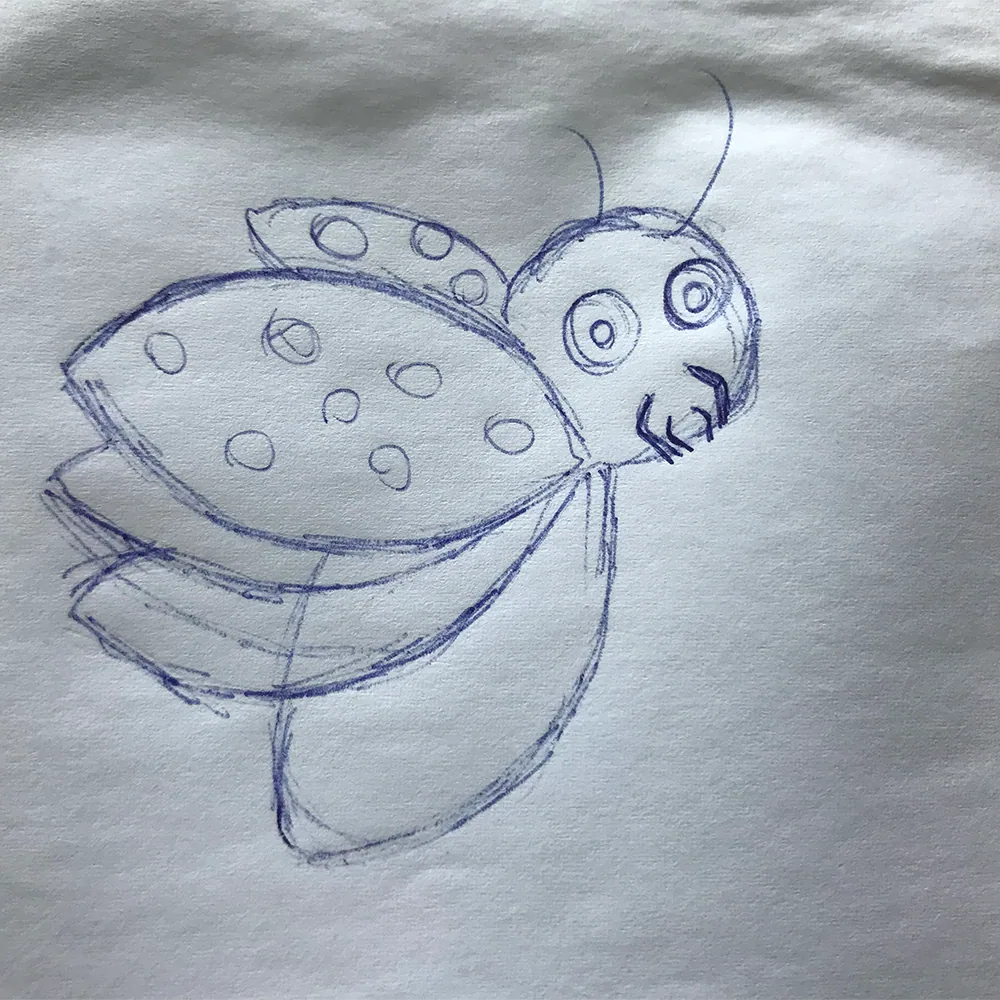

I opgaven Temaopgave, skulle vi i XD lave en prototype af en hjemmeside, hvor der sælges t-shirts. Ved hjælp af Adobe XD, skulle vi udarbejde en prototype 1 og en prototype 2. Efter den første prototype, blabla for en forbedret brugeroplevelse af løsning Y (viden). Min rolle var [indsæt din hovedrolle og ansvarsområder] som jeg udførte [specifik måde med specifikke værktøjer eller metoder] (færdighed). Det lærte mig vigtigheden af [værktøj/metode], som jeg senere brugte i [fremtidigt projekt eller videreudvikling]. Udviklingsprocessen kan se i [illustrationer eller visualitioner] i figur 1 (kompetence).

 


Til denne opgave brugte vi en masse forskellige former for research. Bl.a. Desk research, interview research, survey research og tænke-højt-test. Vi brugte disse former for research, for at finde ud af, om der var andre virksomheder med lignende koncept, om det var noget folk var interesseret i, og om hjemmesiden var til at navigere rundt i og til at forstå.
Se min endelige opgave her: